19 Sampling without Finding Anything (Ch. 19)
Table 19.1 is useful, and not difficult to generate on the fly in R. We can write a function that does the work, where ss = sample size and ep = estimated proportion in the population.
prob.absence<-function(ss, ep) {
tmp <- round((1-ep)^ss, 3)
return(tmp)
}
prob.absence(ss = 16, ep = .01)## [1] 0.851If we wanted to turn this approach around and ask instead how big a sample we would need to conclude with 95% confidence that the population of projectile points contained <1% obsidian points, we can make a function that solves the above equation for sample size, given a specified proportion and confidence level.
ss.absence <- function (ep, cl){
ss <- round(log(1-cl)/log(1-ep),0)
return(ss)
}
ss.absence(ep=.01, cl=.95)## [1] 29819.1 Problem Set Ch. 18 & 19 - Spatial sampling
Consider the following scenario, adapted from the example presented by Richardson and Gajewski (2003): A large public university, flush with funds provided by a state legislature eager to invest in higher education, plans to replace a parking lot with a new archaeological research facility. Before ground can be broken for construction, the university must consider the possibility that archaeological remains may exist under the parking lot (not unheard of!). Because any unexpected finds of archaeological material would involve costly and time-consuming consultation and mitigation, there’s considerable incentive to assess the archaeological features present beforehand, so that an alternative site may be selected if necessary. In ideal conditions near-surface geophysics are often employed to this end, but even when that’s practical, those results generally require some ground-truthing - i.e., test excavations based on some sampling strategy.
We’ll consider four sampling strategies: simple random sampling, stratified random sampling, systematic random sampling, and cluster random sampling.
- simple random sampling: each possible sample of size n units has an equal chance of being selected
- “some practitioners worry that a true simple random sample has the appearance of “bunching” and seek to avoid it; systematic sampling is one way of doing so.” This can be driven by a desire to avoid leaving large areas unsampled.
- systematic random sampling: order the population units in some fashion, randomly select one unit from among the first k ordered units, and then select subsequent units by taking every kth ordered unit.
- “Archaeologists often seem to prefer systematic samples, partly because they appear to give “better coverage” or an “even spread” of a site, and partly because they are easier and quicker to select. These points must be weighed against the possibility of the sampling interval matching some regularity in the data.”
- stratified random sampling: forming subgroups of the population units (“sampling strata”) and selecting a simple random sample of units from within each subgroup
- “The definition of strata could be based on any property, or combination of properties, such as geology or elevation, or on any aspect that is thought likely to affect the parameters under study, for example, the density of artifacts located in a site.” This is likely to work best in conditions of some prior knowledge and/or theoretical expectation about the distribution of archaeological features.
- cluster random sampling: places the sampling units into subgroups; a simple random sample of the subgroups is then taken, and every unit within the selected subgroup is a part of the sample. Here we’ll use quadrat sampling, following Drennan (2009, 241).
Suppose that the parking lot to be redeveloped covers an area of ~6400 \(m^2\) - an 80×80m square. The time and funding initially allotted allow for sampling only 20 8×8m test areas, located by dividing the parking lot into 100 8×8m grid squares and stripping the asphalt from the selected squares. If enough areas contain archaeological material, then further archaeological work may be warranted (how many is enough? - a policy problem, not a sampling problem).
In an R sandbox, we can explore these sampling strategies for different simulated patterns of archaeological remains. We’ll look at two different arrangements of archaeological remains, and explore what happens when we sample each repeatedly with different sampling strategies in order to compare how those sampling strategies perform in different scenarios.
For purposes of exploring various sampling strategies, let’s suppose that we know quite a bit about the archaeological remains under the parking lot. In fact, we can look at them in plan, and check the results of each sampling strategy. Conveniently, the archaeological features consist of pithouses and associated artifacts that always fall within grid squares, and all we will worry about is the presence/absence of pithouses in a sampled area.
## Linking to GEOS 3.13.0, GDAL 3.8.5, PROJ 9.5.1; sf_use_s2() is TRUE# map pithouses
pts <- data.frame(rbind(c(10,8), c(9,3), c(9,9), c(9,10), c(8,5), c(7,5), c(6,4), c(6,7),
c(6,8), c(5,1), c(5,3), c(5,4), c(5,5), c(5,8), c(4,6), c(3,4),
c(3,5), c(3,9), c(1,8), c(1,10)))
pts <- pts * 8
pts_sf <- st_as_sf(pts, coords = c("X2", "X1"))
# overlay a grid
site_grd <- st_make_grid(pts_sf, cellsize = 8, n = 10,
what = "polygons")
st_geometry(pts_sf) <- st_geometry(pts_sf) + 4 + rnorm(20, 0, 1)
# buffer to make these into circles
pithouses <- st_buffer(pts_sf, dist = rnorm(20, mean = 1.5, sd = .5))
plot(site_grd)
plot(pithouses, add = T, col = "green", pch = 16)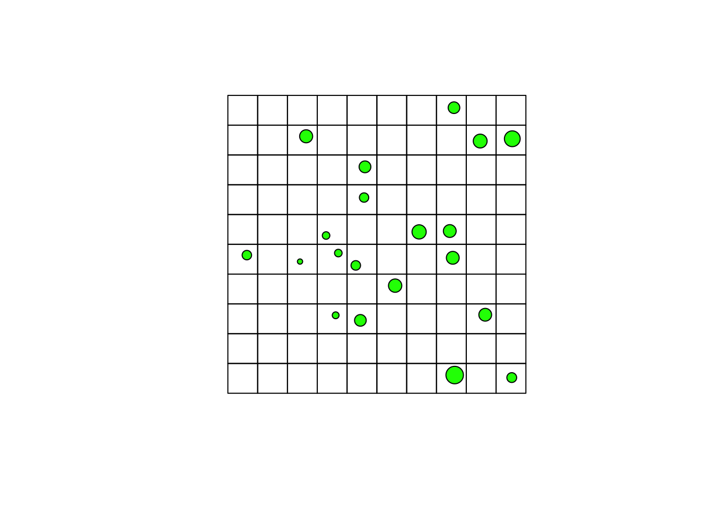
19.1.1 Simple random sampling
set.seed(42)
#select 20 random squares
site_grd_random <- site_grd[sample(1:length(site_grd), 20)]
#plot to make sure that these make sense
plot(site_grd, main = "Simple Random Sample\n(n = 20)")
plot(site_grd_random, col = "yellow", add = T)
plot(pithouses, add = T, col = "green", pch = 16)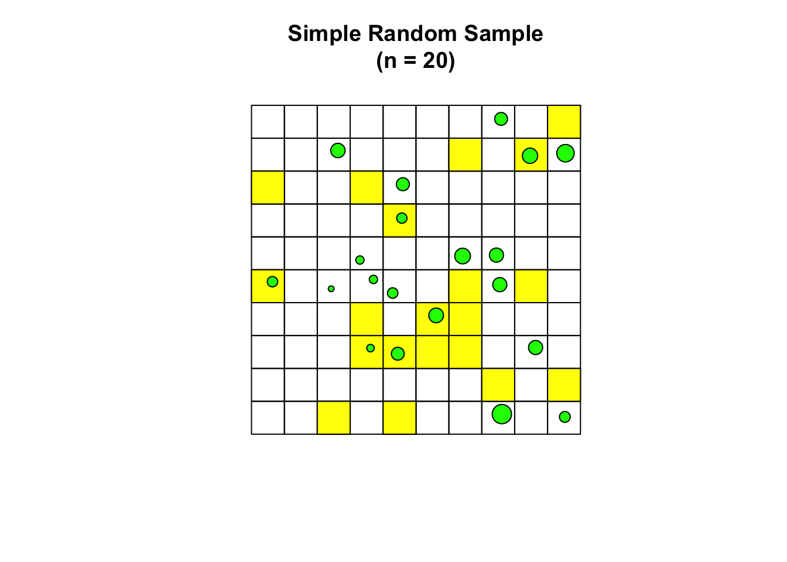
## [1] 619.1.2 Systematic random sampling
set.seed(42)
k <- sample(1:8, 1)
sys_rand <- seq(from = k, by = 8, length.out = 20)
site_grd_sysrand <- site_grd[sys_rand]
plot(site_grd, main = "Systematic Random Sample\n(n = 20)")
plot(site_grd_sysrand, col = "yellow", add = T)
plot(pithouses, add = T, col = "green", pch = 16)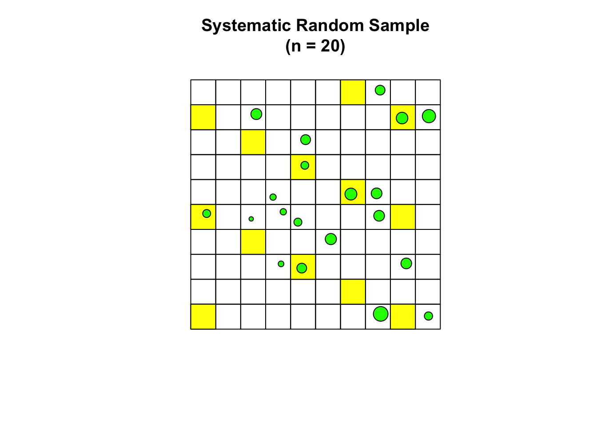
## [1] 519.1.3 Stratified random sampling
#identify strata to be sampled
plot(site_grd, main = "Sampling Strata")
plot(site_grd[1:50], col = "yellow", add = T)
plot(site_grd[51:100], col = "lightgreen", add = T) 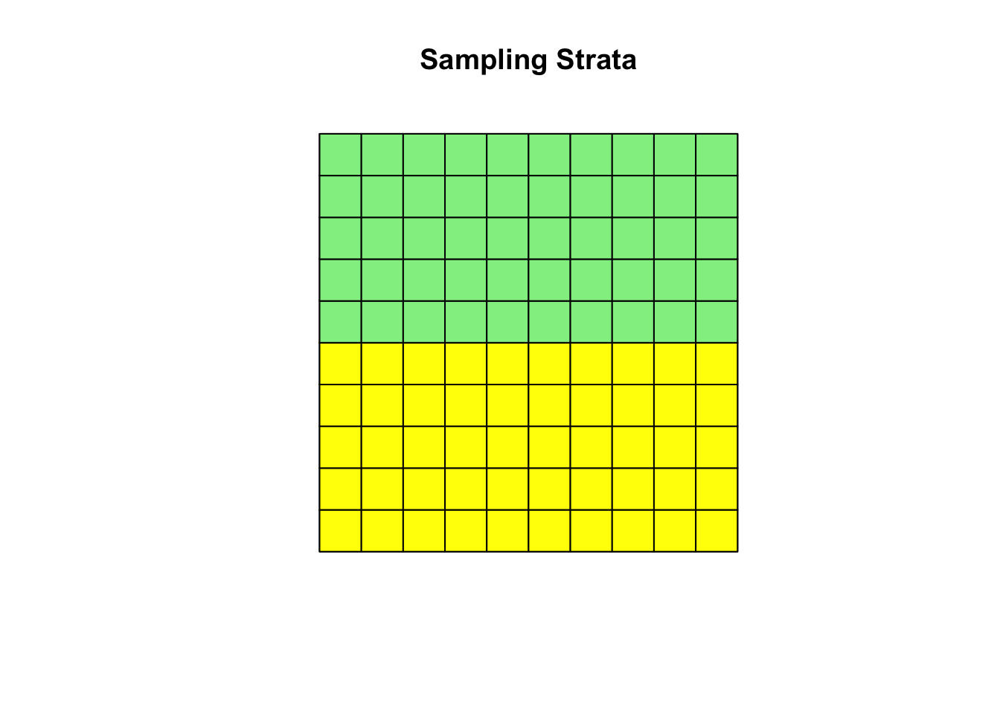
set.seed(42)
#select 10 random squares from each stratum
site_grd_strat1 <- site_grd[sample(1:50, 10)]
site_grd_strat2 <- site_grd[sample(51:100, 10)]
#plot to make sure that these make sense
plot(site_grd, main = "Stratified Random Sample\n(n = 20)")
plot(site_grd_strat1, col = "yellow", add = T)
plot(site_grd_strat2, col = "lightgreen", add = T)
plot(pithouses, add = T, col = "green", pch = 16)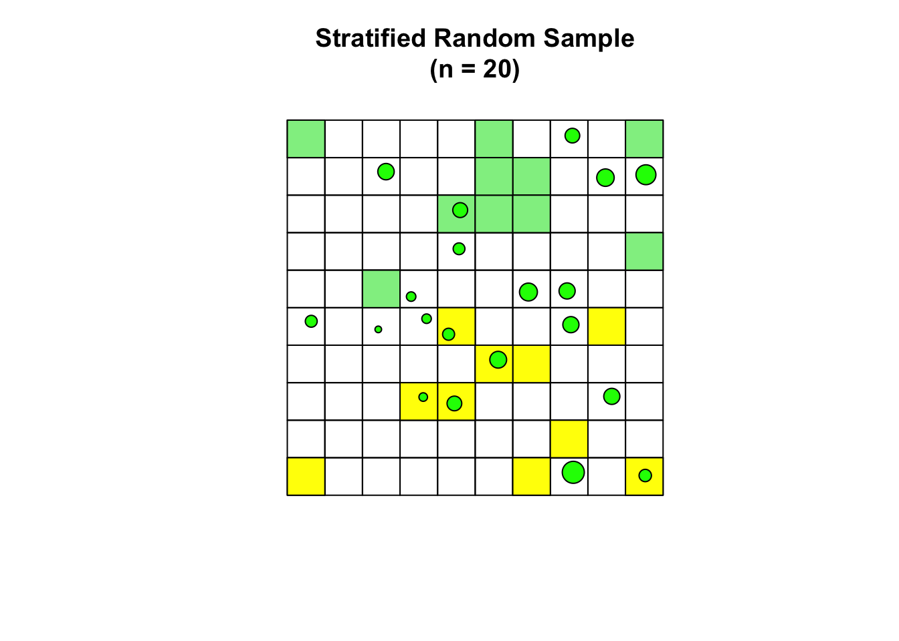
hits_stratrand <- st_contains(c(site_grd_strat1, site_grd_strat2), pithouses)
sum(lengths(hits_stratrand) > 0)## [1] 619.1.4 Cluster (quadrat) random sampling
#add a coarse grid for quadrats
site_grd_quadrats <- st_make_grid(site_grd, cellsize = 16,
what = "polygons")
plot(site_grd)
plot(site_grd_quadrats, add = T, border = "orange", lwd = 2, lty = 2)
plot(pithouses, add = T, col = "green", pch = 16)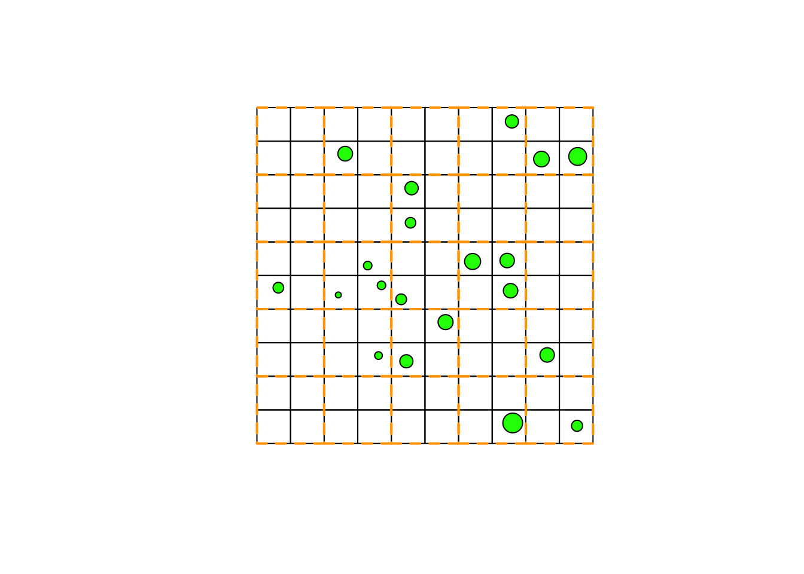
#loop through these quadrat polygons, selecting a single random square in each one
site_grd_quadrats_points <- vector("list", length = 20) #empty list to populate
set.seed(42)
i <- 1
for (i in 1:length(site_grd_quadrats)){
site_grd_quadrats_points[i] <- st_sample(site_grd_quadrats[i], size = 1,
type = "random")
}
#then combine the result into one spatial points object
site_grd_quadrats_sample <- st_within(st_sfc(site_grd_quadrats_points),
site_grd)
#and index the quadrats
site_grd_quadratsampled <- site_grd[unlist(site_grd_quadrats_sample)]
#plot to check
plot(site_grd)
plot(site_grd_quadrats, add = T, border = "orange")
plot(site_grd_quadratsampled, col = "yellow", add = T)
plot(pithouses, add = T, col = "green", pch = 16)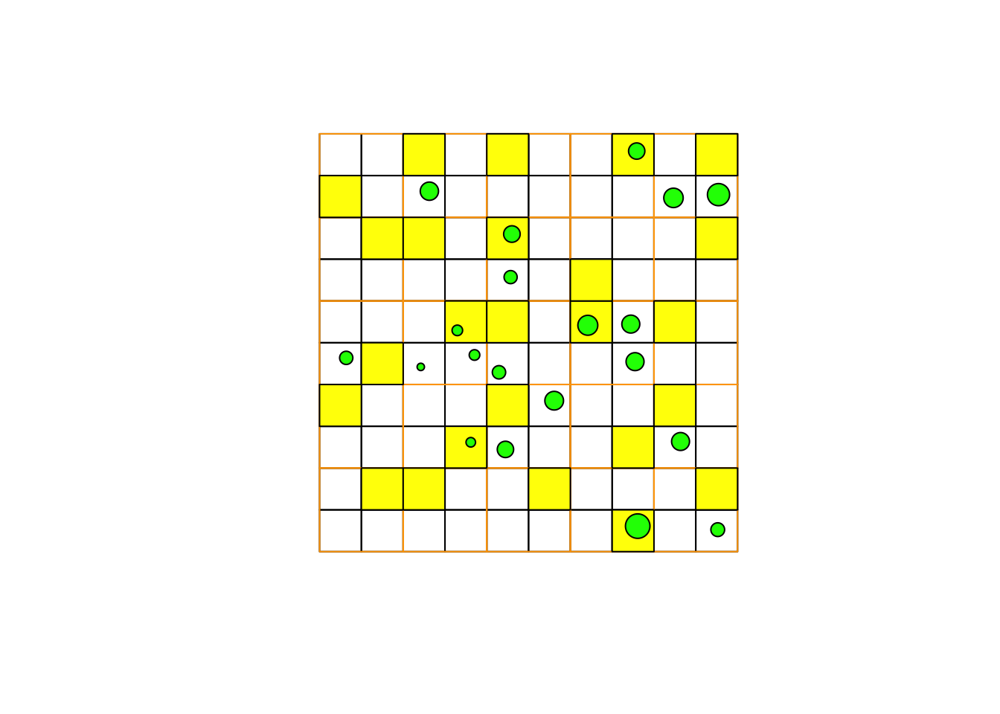
## [1] 6For any sampling strategy, the number of positive results out of 20 sampled test areas can be used to estimate the total number of areas containing archaeological remains at the site. The number of positives is a measure of the frequency of archaeological features: x positives means that x/20 samples contain archaeological features. Since we have sampled 20% (1 in 5) of the available grid squares (20 of the 100), we can multiply the number of positive results in any given sample by 5 in order to estimate how many of the 100 grid squares we estimate will contain archaeological features.
For each of the four sampling strategies, address the following questions:
- Then, for each sampling strategy:
- How many of the selected test areas contain artifacts?
- What is the estimated total number of areas containing archaeological remains at the site?
19.1.5 Simulating repeat sampling
You can repeat this but select a different value for set.seed() to get a different random sample. With a little bit of R cleverness, we can do this many times and store the results (number of positives) of each sample. Sampling repeatedly enables us to look at the distributions of the results of different sampling strategies (so that we don’t unwittingly compare an unusual [unlucky] result of one strategy with an unusual [lucky] result of another).
# simple random, 1000 times
simp_rand_res <- vector("numeric", length = 1000)
i <- 1 # make sure that i starts at 1
for(i in 1:1000){
set.seed(i)
site_grd_random <- site_grd[sample(1:length(site_grd), 20)]
hits_rand <- st_contains(site_grd_random, pithouses)
simp_rand_res[i] <- sum(lengths(hits_rand) > 0)
}
# hist(simp_rand_res, xlab = "Positive results", main = "Simple Random",
# breaks = seq(-.5, 9.5))
# systematic random, 100 times
sys_rand_res <- vector("numeric", length = 1000)
i <- 1
for(i in 1:1000){
set.seed(i)
k <- sample(1:8, 1)
sys_rand <- seq(from = k, by = 8, length.out = 20)
site_grd_sysrand <- site_grd[sys_rand]
hits_sysrand <- st_contains(site_grd_sysrand, pithouses)
sys_rand_res[i] <- sum(lengths(hits_sysrand) > 0)
}
# hist(sys_rand_res, xlab = "Positive results", main = "Systematic Random",
# breaks = seq(-.5, 9.5))
# stratified random, 100 times
strat_rand_res <- vector("numeric", length = 1000)
i <- 1
for(i in 1:1000){
set.seed(i)
site_grd_strat1 <- site_grd[sample(1:50, 10)]
site_grd_strat2 <- site_grd[sample(51:100, 10)]
hits_stratrand <- st_contains(c(site_grd_strat1, site_grd_strat2), pithouses)
strat_rand_res[i] <- sum(lengths(hits_stratrand) > 0)
}
# hist(strat_rand_res, xlab = "Positive results", main = "Stratified Random",
# breaks = seq(-.5, 9.5))
####
# quadrat random sample, 100 times
site_grd_quadrats_points <- vector("list", length = 20) #empty list to populate
quad_rand_res <- vector("numeric", length = 1000)
i <- 1
for(i in 1:1000){
set.seed(i)
j <- 1
for (j in 1:length(site_grd_quadrats)){
site_grd_quadrats_points[j] <- st_sample(site_grd_quadrats[j], size = 1,
type = "random")
}
#then combine the result into one spatial points object
site_grd_quadrats_sample <- st_within(st_sfc(site_grd_quadrats_points),
site_grd)
#and index the quadrats
site_grd_quadratsampled <- site_grd[unlist(site_grd_quadrats_sample)]
hits_quadrat <- st_contains(site_grd_quadratsampled, pithouses)
quad_rand_res[i] <- sum(lengths(hits_quadrat) > 0)
}
# hist(quad_rand_res, xlab = "Positive results", main = "Quadrat Random",
# breaks = seq(-.5, 9.5))par(mfrow = c(2,2))
hist(simp_rand_res, xlab = "Positive results", main = "Simple Random",
breaks = seq(-.5, 10.5))
hist(sys_rand_res, xlab = "Positive results", main = "Systematic Random",
breaks = seq(-.5, 10.5))
hist(strat_rand_res, xlab = "Positive results", main = "Stratified Random",
breaks = seq(-.5, 10.5))
hist(quad_rand_res, xlab = "Positive results", main = "Quadrat Random",
breaks = seq(-.5, 10.5))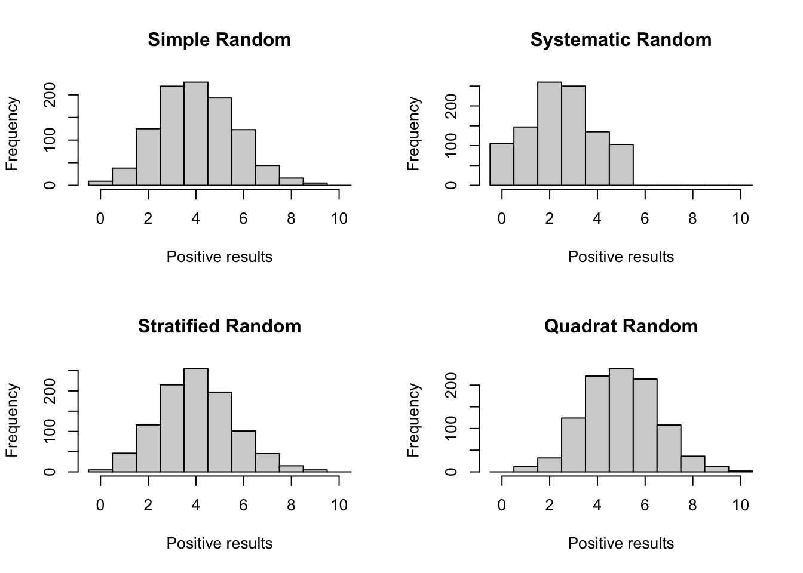
Clearly different sampling strategies tend to produce different results, but this is not due to any simple properties of these sampling strategies. Rather, it has to do with the interaction between sampling strategy and distribution of features being sampled. ### how variable results are
# join all results into a single data frame
# with a column noting sampling strategy
samp_results <- data.frame(positives = c(simp_rand_res, sys_rand_res, strat_rand_res, quad_rand_res),
SampStrat = c(rep("simple", 1000), rep("systematic", 1000),
rep("stratified", 1000), rep("quadrat", 1000)))
boxplot(positives ~ SampStrat, samp_results)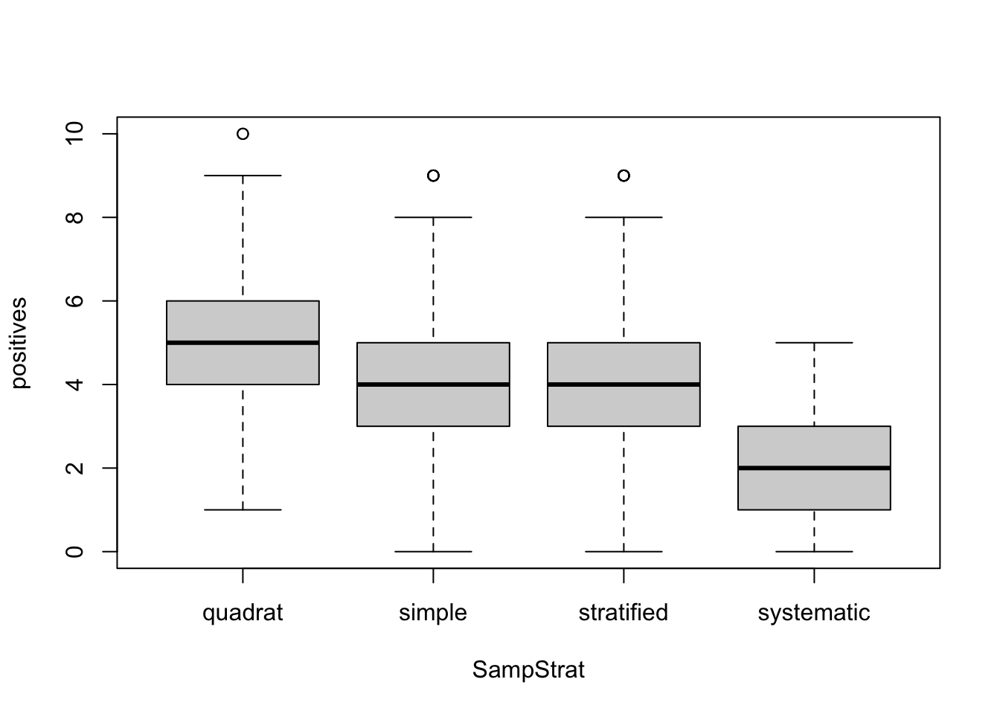
Let’s consider the same parking lot redevelopment project, but with a different arrangement of archaeological features. Based on an archived archaeological report predating the paving of the area, you determine that pithouses were previously documented in the western half of area. You’re not confident that they don’t also exist in the eastern half, but what you do know is enough to suggest separating the area into sampling strata, and sampling those strata unevenly. Since you’re confident that the western half of the area does contain archaeological remains, you want to sample that stratum more intensively, but you don’t want to ignore the eastern half entirely.
# map pithouses
pts2 <- data.frame(x = c(rep(2, 5), rep(3, 8), rep(4,5), 8, 9), y = c(seq(4:8), seq(2:9), seq(4:8), 7, 4))
pts2 <- pts2 * 8
pts2_sf <- st_as_sf(pts2, coords = c("x", "y"))
st_geometry(pts2_sf) <- st_geometry(pts2_sf) + 4 + rnorm(20, 0, 1)
# buffer to make these into circles
pithouses2 <- st_buffer(pts2_sf, dist = rnorm(20, mean = 1.5, sd = .5))
plot(site_grd)
plot(pithouses2, add = T, col = "green", pch = 16)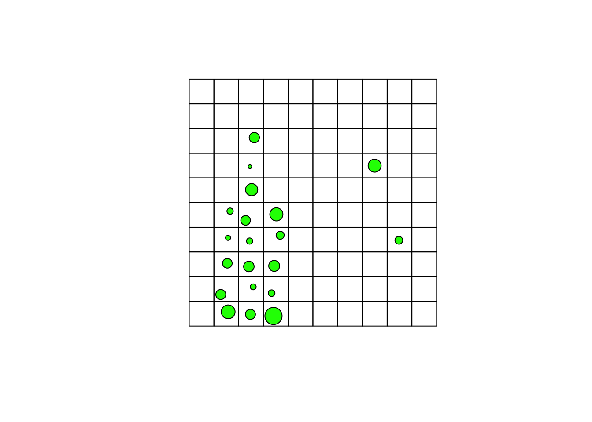
The basic principle of stratified sampling is that you have some reason to believe that the area being sampled is heterogeneous in a way that you can predict. On the basis of that belief, you can separate the area into strata that reflect this unequal distribution. For this to be effective, the variability within each stratum should be small relative to the variability between strata. That is, we separate an area into strata because we think that those strata are likely to be different than one another. With this in mind, consider why - on theoretical grounds alone - the stratified sampling that we conducted above could not be expected to be any more effective than simple random sampling.
In practice, this is probably most likely to be the case in areas with remains visible on the surface (see Orton (2000)), but the principles operates wherever we have some prior belief about the distribution of archaeological features. That might also result from non-archaeological landscape characteristics (for example, we might sample steep slopes differently than flat areas).
#identify strata to be sampled
starts <- seq(from = 0, to = 90, by = 10)
# Add the sequence 1:5 to each starting point
stratA <- outer(1:5, starts, `+`)
# Flatten into a single vector
stratA <- as.vector(stratA)
starts2 <- seq(from = 5, to = 95, by = 10)
stratB <- outer(1:5, starts2, `+`)
stratB <- as.vector(stratB)
plot(site_grd, main = "Sampling Strata")
plot(site_grd[stratA], col = "yellow", add = T)
plot(site_grd[stratB], col = "lightgreen", add = T) 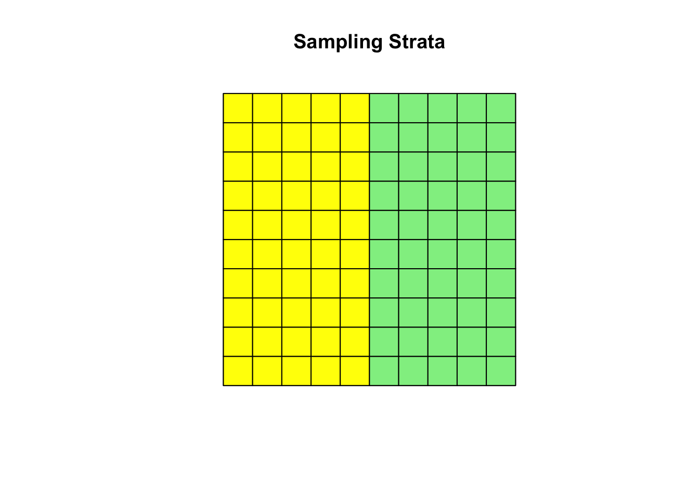
set.seed(42)
#select random squares from each stratum (15 and 5, respectively)
site_grd_stratA <- site_grd[sample(stratA, 15)]
site_grd_stratB <- site_grd[sample(stratB, 5)]
#plot to make sure that these make sense
plot(site_grd, main = "Stratified Random Sample\n(n = 20)")
plot(site_grd_stratA, col = "yellow", add = T)
plot(site_grd_stratB, col = "lightgreen", add = T)
plot(pithouses2, add = T, col = "green", pch = 16)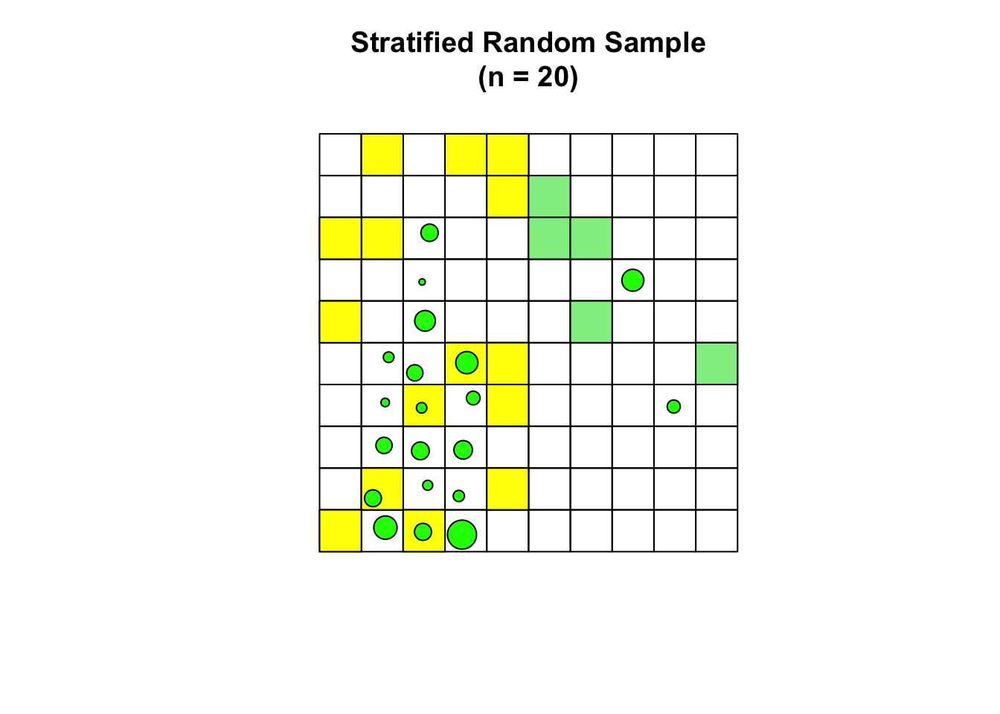
hits_stratrand2 <- st_contains(c(site_grd_stratA, site_grd_stratB), pithouses2)
sum(lengths(hits_stratrand2) > 0) #total hits## [1] 4Note that where sampling strata are uneven, we can not simply treat the number of positive results as a measure of the frequency of archaeological features in the population. We sampled Stratum A at 30% and got 4 hits, but that’s telling us about how frequent features are in Stratum A, not in the whole area. We need to account for the fact that we haven’t sampled the population evenly. Since we have sampled \(\frac{15}{50}\) of Stratum A - 30% - we can estimate the total number of hits there as \(\frac{100}{30}\times{hits}\). This is half of the sampling universe, so we need to add our estimate for Stratum B, where we only sampled \(\frac{5}{50}\) - 10%. So, we estimate the total number of features in the area as \[(\frac{100}{30}\times{hitsA})+(\frac{100}{5}\times{hitsB})\].
#our estimate of the number of positive results in the population has to take into account the strata
hits_stratrandA <- st_contains(site_grd_stratA, pithouses2)
stratA_hits <- sum(lengths(hits_stratrandA) > 0) #Strat A hits
hits_stratrandB <- st_contains(site_grd_stratB, pithouses2)
stratB_hits <- sum(lengths(hits_stratrandB) > 0) #Strat B hits
est_total <- ((100/30) * stratA_hits) + ((100/5) * stratB_hits)Simulate repeat sampling of these strata at least 1000 times, and make a histogram or boxplot of the results. Then choose a second sampling method (simple random, systematic, or quadrat) and sample the same distribution of features (pithouses2) with a comparable simulation. Compare the results.
Briefly explain which sampling method you would choose, and why. What kinds of likely distributions of archaeological features might make a dramatic difference in the success of different sampling strategies?